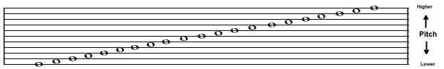
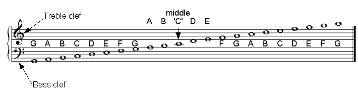
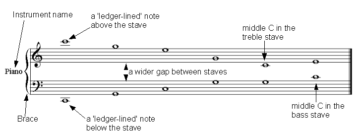
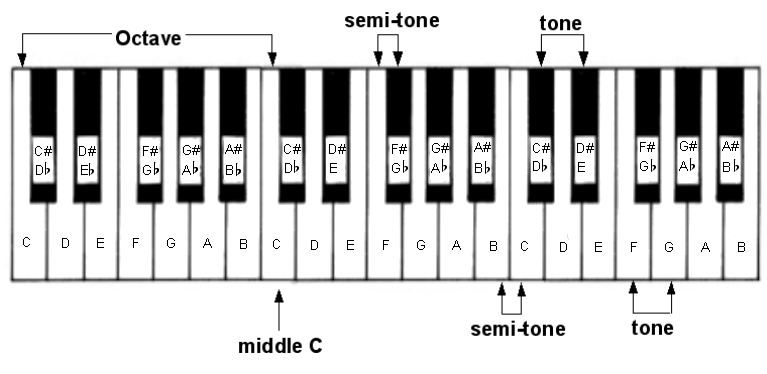
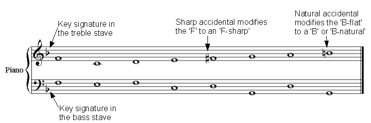
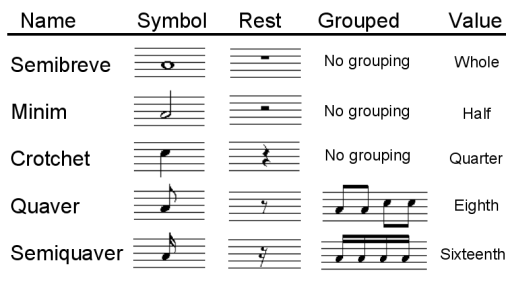
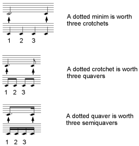
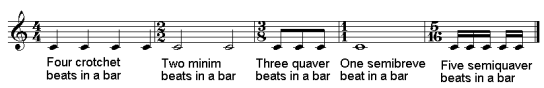
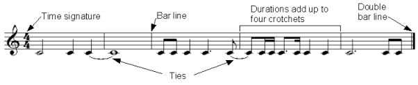
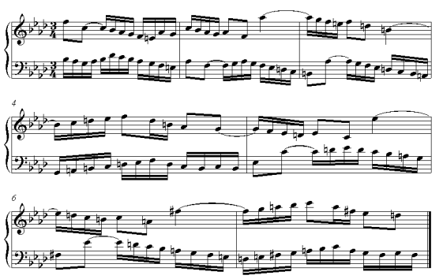

Music Theory 101
This is an introduction to musical theory that I wrote as an appendix to my MSc dissertation (a summary of which can be found in my post about computational creativity with evolutionary algorithms). The language is quite formal but I'm still quite pleased with what I wrote and how much information I managed to compress into just short of 2500 words.
It assumes no prior musical training or knowledge and aims to provide enough information so that the reader is able to appreciate the aims, machinations and processes involved the article referenced above. So without further ado…
Music consists of many different dimensions. The two of primary concern for this article are pitch and duration:
Pitch
Pitch refers to the frequency of the sound of a note. The higher the frequency the higher the note sounds. In the western tradition specific pitches are given letter names in repeating groups called octaves. Thus, the note 'A' in the middle octave of a piano keyboard has a pitch of 440 hertz (oscillations per second). The note 'A' in the octave directly above has a pitch of 880 hertz whereas the 'A' in the octave directly below is pitched at 220 hertz. As one might guess from the example above, the different pitches used in western music are based upon mathematical relationships first discovered over 2,500 years ago by the Greek philosopher Pythagoras.
Pitches are represented on what one might analogise as a musical ladder. There were originally eleven 'rungs' on this ladder with pitches being represented on or between the rungs as shown in the image below. As one draws notes higher up the musical ladder so the pitch being represented sounds higher.

Eleven lines (rungs) were used to represent pitches
It was found that such an abundance of lines made the musical representation difficult to follow so the eleven lines were split into two groups of five lines with the middle line being replaced with a gap. Today, when the pitch that was represented by the absent middle line is required the note has a ‘ledger' line, specific to itself, drawn through its middle. This ‘middle' note, to this day, is called ‘middle C' because it was the note ‘C' that was represented by the middle of the eleven lines.
The resulting five ‘rung' musical ladder is called a stave. To differentiate between a stave representing the higher or lower halves of the original eleven-line ladder, two clefs – the treble and the bass – are used (clef can literally be translated as "key"; try to think of it as a key to a code rather than a key to a door). A stave starting with a treble clef represents the top five lines of the original eleven (and thus the higher pitches), whereas the stave starting with the bass clef represents the bottom five (the lower pitches). The image below shows the same musical information as the previous illustration but using the two stave representation and with the letter names of the notes added.

Two staves with the treble and bass clefs, notes and note names
Often, the gap between the staves is made wider to further enhance readability. A curly bracket (brace) often joins these staves, indicating some form of relationship. (For example, the above illustration implies a single instrument represented over two staves).
Pitches that lay outside the top and bottom of the musical ladder are, like middle C, represented with ledger lines that allow one to imagine how the musical ladder might be extended higher or lower. The image below demonstrates all the features discussed so far.

An example of all the pitch related features discussed so far
The only pitches represented so far have been those that are playable on the white notes on a piano keyboard. In order to be able to understand how one represents the black notes the concepts of tone and semi-tone need to be explained:
A semi-tone is the smallest unit of distance between adjacent notes on a piano keyboard, irrespective of them being white or black notes. Thus, if one were to play all the white and black notes on a piano keyboard in ascending order one would be playing in jumps of a semi-tone.
A tone is simply the same as two semitones. Hence, the distance between two white notes, with each of them adjacent to a common black note, is a tone. However, some of the white notes do not share an adjacent black note so the distance between them is only a semi-tone. These points are demonstrated below.

Tones and semi-tones shown on a piano keyboard
Notice that the black notes are denoted by two different names: the name of the note pitched a semi-tone below with a sharp (♯) sign next to it, or the name of the note pitched a semi-tone higher with a flat (♭) sign next to it. One raises the pitch value of a note by a semi-tone by ‘sharpening' it and lowers it by a semi-tone by ‘flattening' it. Thus, the black note between ‘C' and ‘D' can be described as both ‘C-sharp' and ‘D-flat'. In addition, one could legitimately rename the note ‘C' as ‘B-sharp' and denote the note ‘E' as ‘F-flat'. In musical parlance the sharp and flat signs are known as accidentals. Furthermore, the convention of nominating an identical pitch in two different ways (such as ‘B-flat' and ‘A-sharp') is described as being enharmonic; i.e. the pitch remains the same but the note name is different.
When showing accidentals on the stave one merely precedes the note whose pitch value one wants to modify with either the sharp sign (for raising the note by a semi-tone) or the flat sign (when lowering it by the same amount). Furthermore, if certain notes are always modified by accidentals due to the key (see explanation below) the accidentals are placed at the start of every stave, before any notes, to act as a reminder. These groups of ‘reminder' accidentals are called the key signature. In addition, if one wanted to return one of the notes that was modified in the key signature back to its ‘natural' status (i.e. white note) one merely places a ‘natural' accidental sign in front of it: ♮. This is all demonstrated in the illustration below:

An example of a key signature and accidentals in use
A note about keys: The key is merely the name given to a collection of notes defined in a scale. Music is written in ‘keys' (i.e. the music will only use notes taken from the scale that defines the key). A scale is a collection of notes that are derived from their relationship to the ‘tonic' (the first note of the scale) and are commonly described through the tone or semi-tone steps between the various notes. For example, if T=tone and S=semi-tone then the steps between the notes in the common ‘major' scale can be described thus: TTSTTTS. So, if one were to start on the note ‘C' (the tonic) one could work out the scale of ‘C-major' by following the TTSTTTS formula. If you were to try it you would find that the resulting scale consisted of only the "white" notes on a piano keyboard though scales usually contain a mixture of "white" and "black" notes. Scales can start on any note but by following the same formula; recognisably "right" scales will result. Most scales consist of eight notes though numerous tone/semi-tone step permutations exist that describe many different eight note scales that are called ‘modes'. (It is interesting to note that Pentatonic scales have only five notes and the Blues scale can have more than eight)
We are now in a position where the pitch of a note can be represented with enough accuracy for the purposes of understanding basic musical theory. However, notes do not merely consist of a pitch. The other essential dimension that describes a note is that of duration.
Duration
Duration describes how long the note lasts through time. A collection of durations make up a rhythm.
The duration of a note is described by what can be thought of as fractions of a whole note. In western music theory a whole note is represented by a single hollow round note worth the value ‘1' that is given the name ‘semibreve'.
Further notes of shorter duration values are obtained by cutting the preceding largest note duration in half. So, by splitting the duration of a semibreve in half one obtains two ‘minims'. A minim is worth the value of a half and is represented by a hollow round note with a stick attached.
Furthermore, halving a minim produces two ‘crotchets'. A crotchet lasts exactly half the duration of a minim and, consequently, a quarter of a semibreve's duration. Crotchets are also called quarter-notes and are represented by a filled in round note with a stick attached.
Other subdivisions produce ‘quavers' (or eighth notes) and ‘semi-quavers' (sixteenth notes) that are represented by filled in round notes with a stick and either one tail (for the quaver) or two tails (for the semi-quaver).
Both quavers and semiquavers can be grouped together to aid readability. This is achieved by ‘beaming' together the tails of the notes.
In addition, to further aid the readability of the music the stick attached to the body of a note can point either up or down. If the note is below the middle of the five lines of the stave then the stick usually points up, if the note is above the middle line the stick points down and if the note is on the middle line the person writing the score uses their discretion as to what looks best in the context.
Often, silences are required in a piece of music. These conform to the same values as the note durations described above but are represented by special symbols that denote a ‘rest'. The table below demonstrates all the features related to duration covered so far:

The representation of note duration, silence and grouping
However, how does one represent a duration that is three quarters (as opposed to half) of next largest note? This is achieved through the use of the ‘dot' which, when added after a note, increases its length by half. Thus, a dotted minim is worth three crotchets or three quarters of a semibreve. This is how it is done:

Dotted notes and relative values
Furthermore, to make navigating the piece of music easier, durations are grouped into fixed-length groups called ‘bars'. One might think of bars as ‘bite-size-chunks' that enable one to easily digest the music. The length of a bar is defined in terms of the number of beats of a particular duration. This definition is written at the start of the piece of music and is called the ‘time signature'.
The time signature consists of two numbers arranged vertically so they look similar to the expression of a vulgar fraction (although they express different information and the time signature has no line separating the numbers). The top number gives the number of beats in a bar. The bottom number denotes the duration of the beats. The bottom number is directly related to the value of the durations encountered before. Thus, if the bottom number is a ‘1' then the beats are the length of a semibreve whereas if the number is a ‘2' then the beats are the length of a half note (minim). A ‘4' denotes quarter notes (crotchets), an ‘8' eighth notes (quavers) and so on. The most common time signature is four crotchet beats in a bar, also shown as 4/4 and spoken out loud as "four four". The picture below provides some examples and explanation:

Examples of different time signatures
The contents of a bar are shown between bar lines that are simply a single vertical line. A double bar line denotes the end of a section or piece of music.
It is vital to realise that the sum total of the duration values of the notes in any given bar will be exactly equal to the duration value expressed in the time signature. For example, the bars defined with a ‘4/4' time signature must contain durations whose sum equals the duration of exactly four crotchets. Furthermore, if the time signature is ‘3/4' (three crotchet beats) then a semibreve (that is worth four crotchet beats) cannot be used as it exceeds the length of the duration of the bar.
Finally, if one wants to have a note whose duration spans a bar line then one joins notes of the appropriate value together with a ‘tie', a curved line reaching from one to the other. The following example demonstrates all of the above points:

Ties, bar lines and the sum of durations
Now that both pitch and duration have been explained it is possible to combine them in the following extract from J.S.Bach's The Two-Part Invention No. 9 in F minor.

Counterpoint by J.S.Bach
An important point, that can only be made when both pitch and duration elements have been combined, is that accidentals last for the duration of a bar. Thus, in bar four, the third note in the treble stave is denoted a ‘D-natural'. Three notes later there is another ‘D' that is still a natural because the end of the bar has not been crossed. Were there to be a ‘D' of that pitch in the next bar it would return to the value of ‘D-flat' as defined in the key signature unless it had itself been modified by an accidental. Furthermore, notice how both the durations and pitch line up properly so, for example, four semiquavers take up the same ‘width' as a single crotchet (a crotchet is the same duration as four semiquavers) and pitches represented with ledger lines are consistently spaced apart.
Counterpoint
The above extract from Bach is a good example of what is meant by ‘counterpoint'. The term comes from the Latin punctus contra punctum (note against note) and describes a piece of music where two or more contrasting melodies are combined; it is to be hoped, with pleasing results. The piece by Bach consists of two parts (one each in the treble and bass staves) in ‘free' counterpoint. If played on their own each part would be an individual melody in its own right. However, it is because of the way that the melodies have been cleverly composed that they can fit together and complement each other. Bach is famous for writing counterpoint of great beauty and complexity with up to six separate parts (‘part' is used synonymously with melodic line) playing together.
Nevertheless, such complexity is dwarfed by the works of earlier composers such as Palestrina, Gabrielli and Monteverdi who were regularly writing music with sometimes eight, sixteen (or even more) parts working in counterpoint. The most famous example of this contrapuntal ‘overkill' is ‘Spem in Allium' by the English composer Thomas Tallis. He wrote this piece for eight five part choirs resulting in, at times, forty separate parts working in counterpoint. Nevertheless, it must be pointed out that the melodic writing of these composers was simpler than that of Bach. As a rule of thumb, the more complex a melody becomes the harder it is to make it work contrapuntally.
Thus, we arrive at the crux of the matter. The composing of counterpoint is not based on fortuitous chance melodic combinations, nor is its practise restricted to only those possessing musical genius. Rather, it is the result of applying specific rules and guidelines. In other words, it is a skill that can be learned. The most famous means of teaching counterpoint is that developed by Johann Joseph Fux and explained in his dialogue ‘Gradus ad Parnassum'.
Conclusion
It is at this point that I went on to explain how the rules of species counterpoint work. Happily, a version of this next appendix is also available on my blog: Species Counterpoint
Once armed with the knowledge the board for my MSc dissertation in Computing were in a position to understand why I wanted to use genetic algorithms to compose counterpoint, as described in the blog post referenced earlier concerning computational creativity.
As always, comments, suggestions and feedback is most welcome. I hope you've found this useful!